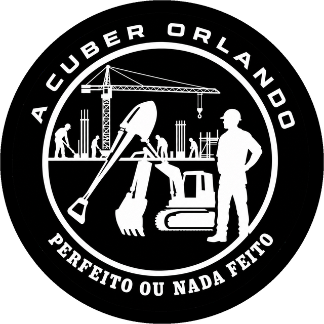

Cuber Orlando
Automóveis, construção e soluções profissionais.
Perfeito ou nada feito
Compra e venda de veículos, importação e exportação, TVDE, entregas e obras de construção, a partir de Cacia, Aveiro.

- Desde
- 2 áreasCarros e obras
- CaciaAveiro
Automóveis
Veículos em destaque
Construção
Porquê escolher-nos
- Dois negócios, um contactoAutomóveis e construção na mesma empresa.
- Ligeiros e pesadosVeículos novos ou usados.
- Desde Atividade em Cacia, Aveiro.
- Contacto diretoTelefone, email ou WhatsApp.
Onde estamos
Ver no mapa
Fala connosco
Diz-nos o que precisas, em automóveis ou em obras.
Contactar